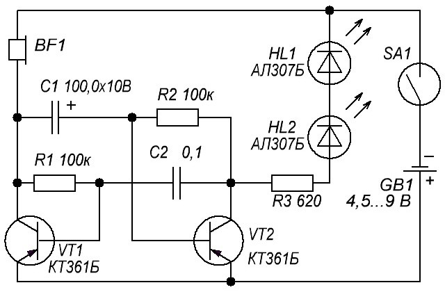
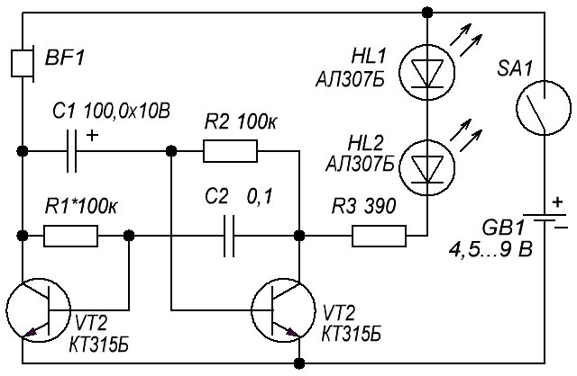
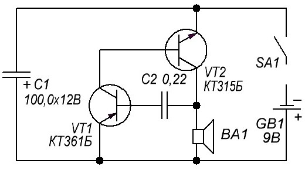
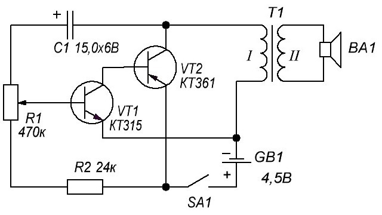
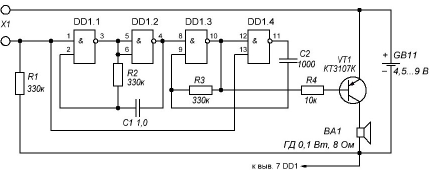
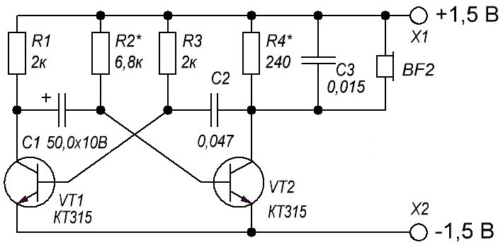
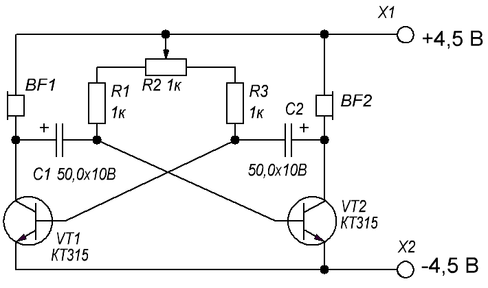
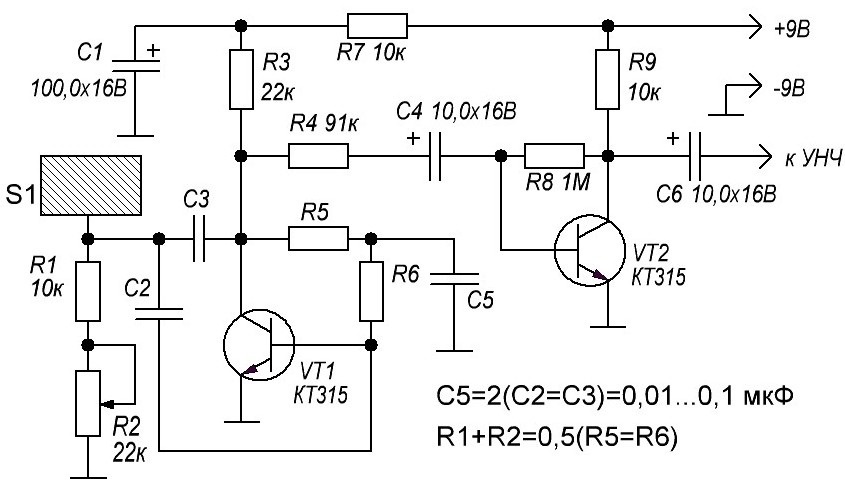
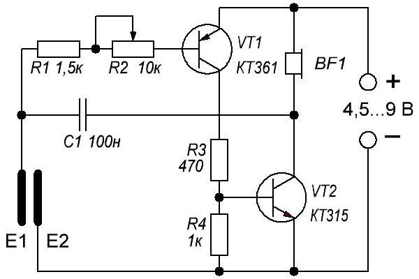

Имитаторы звуков
Электронная утка
Игрушечную утку можно снабдить несложной схемой имитатора «кряканья» на двух транзисторах. Схема (рис. 1) представляет собой классический мультивибратор на двух транзисторах, в одно плечо которого включен акустический капсюль, а нагрузкой другого служат два светодиода HL1 и HL2, которые можно вставить в глаза игрушки. Обе эти нагрузки работают поочередно – то раздается звук, то вспыхивают светодиоды – глаза утки. Тональность звука подбирается резистором R1. В качестве включателя питания SA1 можно применить герконовый датчик. При поднесении магнита к геркону его контакты замыкаются и схема начинает работать. Это может происходить при наклоне игрушки к спрятанному магниту или поднесения своеобразной «волшебной палочки» с магнитом.

Рис. 1 - Схема электронной утки на транзисторах КТ361
Таблица 1
| Обозначение | Тип | Номинал | Количество | Примечание |
|---|---|---|---|---|
| VT1, VT2 | Биполярный транзистор | КТ361Б | 2 | МП39-МП42, КТ209, КТ502, КТ814 |
| HL1, HL2 | Светодиод | АЛ307Б | 2 | |
| C1 | Электролитический конденсатор | 100 мкФ 10В | 1 | |
| C2 | Конденсатор | 0,1 мкФ | 1 | |
| R1, R2 | Резистор | 100 кОм | 2 | |
| R3 | Резистор | 620 Ом | 1 | |
| BF1 | Акустический излучатель | ТМ2 | 1 | |
| SA1 | Геркон | 1 | ||
| GB1 | Элемент питания | 4,5-9 В | 1 |
Транзисторы в схеме могут быть любые p-n-p типа, малой или средней мощности, например МП39 – МП42 (старого типа), КТ209, КТ502, КТ814, с коэффициентом усиления более 50. Можно использовать и транзисторы структуры n-p-n, например КТ315, КТ342, КТ503, но тогда нужно изменить полярность питания, включения светодиодов и полярного конденсатора С1 (рис.2). В качестве акустического излучателя BF1 можно использовать капсюль типа ТМ-2 или малогабаритный динамик. Налаживание схемы сводится к подбору резистора R1 для получения характерного звука кряканья.

Рис. 2 - Схема электронной утки на транзисторах КТ315.
Звук подскакивающего металлического шарика
Схема довольно точно имитирует такой звук, по мере разряда конденсатора С1 громкость «ударов» снижается, а паузы между ними уменьшаются. В конце послышится характерный металлический дребезг, после чего звук прекратится.

Рис. 3 - Схема имитатора звука подскакивающего металлического шарика
Таблица 2
| Обозначение | Тип | Номинал | Количество |
|---|---|---|---|
| VT1 | Биполярный транзистор | КТ361Б | 1 |
| VT2 | Биполярный транзистор | КТ315Б | 1 |
| C1 | Электролитический конденсатор | 100 мкФ, 12В | 1 |
| C2 | Конденсатор | 0,22 мкФ | 1 |
| BF1 | Динамическая головка | ГД 0,5...1 Вт, 8 Ом | 1 |
| GB1 | Элемент питания | 9 В | 1 |
От емкости С1 зависит общая продолжительность звучания, а С2 определяет длительность пауз между «ударами». Иногда для более правдоподобного звучания полезно подобрать транзистор VT1, так как работа имитатора зависит от его начального тока коллектора и коэффициента усиления (h21э).
Транзисторы можно заменить на аналогичные, как и в предыдущих схемах.
Имитатор звука мотора
Им можно, например, озвучить радиоуправляемую или другую модель передвижного устройства.

Рис. 4 - <Схема имитатора звука мотора/p> Схема имитатора звука мотора
Варианты замены транзисторов и динамика – как и в предыдущих схемах.
Трансформатор Т1 – выходной от любого малогабаритного радиоприемника (через него в приемниках также подключен динамик).
Таблица 3
| Обозначение | Тип | Номинал | Количество | Примечание |
|---|---|---|---|---|
| VT1 | Биполярный транзистор | КТ315Б | 1 | |
| VT2 | Биполярный транзистор | КТ361Б | 1 | |
| C1 | Электролитический конденсатор | 15мкФ 6В | 1 | |
| R1 | Переменный резистор | 470 кОм | 1 | |
| R2 | Резистор | 24 кОм | 1 | |
| T1 | Трансформатор | 1 | От любого малогабаритного радиоприемника |
Универсальный имитатор звуков
Существует множество схем имитации звуков пения птиц, голосов животных, гудка паровоза и т.д. Предлагаемая ниже схема собрана всего на одной цифровой микросхеме К176ЛА7 (К561 ЛА7, 564ЛА7) и позволяет имитировать множество разных звуков в зависимости от величины сопротивления, подключаемого к входным контактам Х1.

Рис. 5 - Схема универсального имитатора звуков
Следует обратить внимание, что микросхема здесь работает «без питания», то есть на ее плюсовой вывод (вывод 14) не подается напряжение. Хотя на самом деле питание микросхемы все же осуществляется, но происходит это только при подключении сопротивления-датчика к контактам Х1. Каждый из восьми входов микросхемы соединен с внутренней шиной питания через диоды, защищающие от статического электричества или неправильного подключения. Через эти внутренние диоды и осуществляется питание микросхемы за счет наличия положительной обратной связи по питанию через входной резистор-датчик.
Схема представляет собой два мультивибратора. Первый (на элементах DD1.1, DD1.2) сразу начинает вырабатывать прямоугольные импульсы с частотой 1 … 3 Гц, а второй (DD1.3, DD1.4) включается в работу, когда на вывод 8 с первого мультивибратора поступит уровень логической «1». Он вырабатывает тональные импульсы с частотой 200 … 2000 Гц. С выхода второго мультивибратора импульсы подаются на усилитель мощности (транзистор VT1) и из динамической головки слышится промодулированный звук.
Если теперь к входным гнездам Х1 подключить переменный резистор сопротивлением до 100 кОм, то возникает обратная связь по питанию и это преображает монотонный прерывающийся звук. Перемещая движок этого резистора и меняя сопротивление можно добиться звука, напоминающего трель соловья, щебетание воробья, крякание утки, квакание лягушки и т.д.
Таблица 4
| Обозначение | Тип | Номинал | Количество | Примечание |
|---|---|---|---|---|
| DD1 | Микросхема | К176ЛА7 | 1 | К561ЛА7, 564ЛА7 |
| VT1 | Биполярный транзистор | КТ3107К | 1 | КТ3107Л, КТ361Г |
| C1 | Конденсатор | 1 мкФ | 1 | |
| C2 | Конденсатор | 1000 пФ | 1 | |
| R1-R3 | Резистор | 330 кОм | 1 | |
| R4 | Резистор | 10 кОм | 1 | |
| BF1 | Динамическая головка | ГД 0,.1...0,5 Вт 8 Ом | 1 | |
| GB1 | Элемент питания | 4,5-9 В | 1 |
Транзистор можно заменить на КТ3107Л, КТ361Г но в этом случае нужно поставить R4 сопротивлением 3,3 кОм, иначе уменьшится громкость звука. Конденсаторы и резисторы – любых типов с номиналами, близкими к указанным на схеме. Надо иметь в виду, что в микросхемах серии К176 ранних выпусков отсутствуют вышеуказанные защитные диоды и такие зкземпляры в данной схеме работать не будут! Проверить наличие внутренних диодов легко – просто замерить тестером сопротивления между выводом 14 микросхемы («+» питания) и ее входными выводами (или хотя бы одним из входов). Как и при проверке диодов, сопротивление в одном направление должно быть низким, в другом – высоким.
Выключатель питания в этой схеме можно не применять, так как в режиме покоя устройство потребляет ток менее 1 мкА, что значительно меньше даже тока саморазряда любой батареи!
Наладка
Правильно собранный имитатор никакой наладки не требует. Для изменения тональности звука можно подбирать конденсатор С2 от 300 до 3000 пФ и резисторы R2, R3 от 50 до 470 кОм.
Генератор трелей соловья
Генератор трелей соловья, выполнен на асимметричном мультивибраторе (рис. 6). Низкочастотный колебательный контур, образованный телефонным капсюлем и конденсатором СЗ, периодически возбуждается импульсами, вырабатываемыми мультивибратором. В итоге формируются звуковые сигналы, напоминающие соловьиные трели. В отличие от предыдущей схемы звучание этого имитатора не управляемое и, следовательно, более однообразное. Тембр звучания можно подбирать, меняя емкость конденсатора С3.

Рис. 6 - Схема иммитатора трелей соловья
Генератор шума дождя
Генератор «шума дождя» вырабатывает звуковые импульсы, поочередно воспроизводимые в каждом из телефонных капсюлей. Эти щелчки отдаленно напоминают падение капель дождя на подоконник.

Рис. 7 - Принципиальная схема генератора шума дождя
Для того чтобы придать случайность характеру падения капель, схему можно усовершенствовать, введя, например, последовательно с одним из резисторов канал полевого транзистора. Затвор полевого транзистора будет представлять собой антенну, а сам транзистор будет являться управляемым переменным резистором, сопротивление которого будет зависеть от напряженности электрического поля вблизи антенны.
Электронный барабан-приставка
Электронный барабан — схема (рис. 8), генерирующая звуковой сигнал соответствующего звучания при прикосновении к сенсорному контакту [МК 4/82-7]. Рабочая частота генерации находится в пределах 50…400 Гц и определяется параметрами RC-элементов устройства. Подобные генераторы могут быть использованы для создания простейшего электромузыкального инструмента с сенсорным управлением.

Рис. 8 - Принципиальная схема электронного барабана.
Электронная скрипка с сенсорным управлением
Электронная «скрипка» сенсорного типа представлена схемой, приведенной в книге Б.С. Иванова (рис. 9). Если к сенсорным контактам «скрипки» приложить палец, включается генератор импульсов, выполненный на транзисторах VT1 и VT2. В телефонном капсюле раздастся звук, высота которого определяется величиной электрического сопротивления участка пальца, приложенного к сенсорным пластинкам.

Рис. 9 - Схема электронной скрипки на транзисторах.
Если сильнее прижать палец, его сопротивление понизится, соответственно возрастет высота звукового тона. Сопротивление пальца зависит также от его влажности. Изменяя степень прижатия пальца к контактам, можно исполнять незамысловатую мелодию. Начальную частоту генератора устанавливают потенциометром R2.